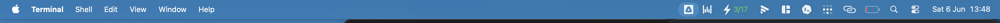

A menu bar app that blocks macOS sleep — but only while a Claude Code agent is actually working. Walk away from the laptop. The agent keeps running. When it finishes, the Mac sleeps like normal.
Each row is the chat's name — the AI-generated terminal-tab title. ⚡ green = working · 🌙 grey = idle · ⚠ orange = wedged (busy but silent >90s → allow sleep). Badge: ✓ status flag · ☕ caffeinate-child · ⚠ wedge. The ▸ opens an instant submenu with that session's last 👤 prompt + 📝 recap.
Vibe coders sit awkwardly next to laptops they can't close.
In February 2025, Andrej Karpathy coined "vibe coding": "give in to the vibes, embrace exponentials, and forget that the code even exists." Within months, the agentic CLIs landed — Claude Code, Cursor, Codex CLI, Devin. They don't autocomplete. They take 5, 15, 30 minutes per turn and come back with diffs.
And here's the catch nobody warned you about: your Mac sleeps the moment you shut the lid. The agent — and everything it was halfway through — dies with it. On Apple Silicon, the lid is a hardware magnet. caffeinate can't override it. pmset disablesleep 1 can't override it. Closing the lid physically forces sleep, no matter what you set in software.
So the world's most expensive AI coding tool spawned a new ritual: devs camping next to open laptops, refreshing the terminal, waiting for an agent to finish — too scared to walk away.
You come back to a dark screen. Your Mac went to sleep. The terminal session is frozen. Twenty minutes of autonomous work — gone. — Dima Osipa, Medium
When Claude works for a long time, my Mac may go to sleep and pause the agent. It's very annoying to return to the computer only to find that it hasn't been doing anything in the meantime. — T. N. Granados, tngranados.com
The first time you kick off two Claude sessions simultaneously and watch them both making progress without any interference, it genuinely changes how you think about AI-assisted development. You're not waiting — you're directing. — Dan Mindru, Parallel Vibe Coding with Git Worktrees
And as devs scaled up to "agent farms" — 4, 8, sometimes 16 Claude Code instances in parallel git worktrees — the don't-close-the-lid problem multiplied. Now eight agents die when the battery dips.
Sleep is suppressed only while a Claude process is actually doing work — not just running.
The existing tools — caffeinate, Amphetamine, KeepingYouAwake, Theine — all share the same flaw: they're manual switches. You toggle them on, you forget they're on, you murder your battery overnight. Or you toggle them off, forget, and lose an agent's work.
Claude No-Sleep is automatic and surgical:
~/.claude/sessions/<PID>.json. That's the canonical inter-process signal Claude itself uses — we just read it. Falls back to per-PID CPU% for older Claude Code versions that don't ship the flag yet.pmset disablesleep, and writes a state file.
Live in the menu bar. Click for the dropdown with every session, CPU%, uptime, and a tooltip showing the last prompt + recap per session.
Three small files. One launchd job. Zero kernel hacks.
The two trickiest bits worth highlighting:
status, not CPU (anymore)The first version sampled per-PID %CPU and called anything above 2% "working". It worked, but had two failure modes: a hung Claude process burning CPU in a loop counted as working forever, and a session waiting on a long Anthropic streaming response could briefly dip below the threshold and be misclassified as idle. We dug into the Claude Code source and found ~/.claude/sessions/<PID>.json — Claude itself writes its current status field to that file on every tool-start, tool-end, and API-response-complete edge. It's the inter-process activity channel Claude uses internally, so we use it too. CPU stays as a fallback for old Claude Code versions (pre-2.1.158) where the field doesn't exist yet.
A status flag is only as reliable as the process that writes it. If Claude itself hangs (kernel level stuck syscall, runaway Bash tool, whatever) the file freezes at "busy" forever. We catch that by cross-checking the transcript: ~/.claude/projects/<cwd>/<sessionId>.jsonl gets appended on every assistant token, every tool result, every system event. If status=="busy" but the jsonl has been silent for 90 seconds, the session is wedged — we mark it ⚠ and let the Mac sleep.
~/.claude/sessions/<pid>.jsonFor the tooltip on each row, we need to know which jsonl belongs to which PID. The same session manifest gives us that: it carries sessionId and cwd, from which we derive the exact transcript path, then pull the last last-prompt event and the most recent system / subtype=away_summary (Claude's internal name for "recap").
Under a minute. Two Homebrew casks and one repo clone.
# 1. Install SwiftBar (menu bar host) and Ice (menu bar manager — required if
# your MacBook has the notch; SwiftBar's slot is otherwise hidden behind it).
brew install --cask swiftbar jordanbaird-ice
# 2. Clone this repo
git clone https://github.com/Globarti/claude-nosleep.git
cd claude-nosleep
# 3. Drop the watcher and helper script into ~/.claude/nosleep/
mkdir -p ~/.claude/nosleep ~/SwiftBarPlugins
cp claude-watch.py focus-tty.sh ~/.claude/nosleep/
chmod +x ~/.claude/nosleep/{claude-watch.py,focus-tty.sh}
# 4. Drop the SwiftBar plugin
cp swiftbar-plugin.sh ~/SwiftBarPlugins/claude-nosleep.10s.sh
chmod +x ~/SwiftBarPlugins/claude-nosleep.10s.sh
defaults write com.ameba.SwiftBar PluginDirectory -string "$HOME/SwiftBarPlugins"
# 5. Drop the launchd job and start it
cp com.bartek.claude-nosleep.plist ~/Library/LaunchAgents/
launchctl load ~/Library/LaunchAgents/com.bartek.claude-nosleep.plist
# 6. Launch SwiftBar (and Ice if you have a notch MacBook)
open -a SwiftBar
open -a IceVerify it's working:
pmset -g | grep SleepDisabled # should be 1 if any Claude is using CPU
~/.claude/nosleep/claude-watch.py --status # raw plugin output| What | Why |
|---|---|
| macOS 13+ (Ventura or later) | SwiftBar 2.x + sfimage menu bar items |
| Claude Code installed | This tool is specifically about Claude Code sessions |
NOPASSWD sudo for pmset | The watcher runs sudo pmset disablesleep non-interactively. Either grant NOPASSWD: ALL or scope to /usr/bin/pmset. |
| Python 3.9+ (system default works) | No external deps. Uses only stdlib. |
This is the part nobody else gets right. On Apple Silicon, closing the lid puts the Mac to sleep via the hardware magnet — caffeinate, third-party menu bar apps, and even pmset disablesleep 1 normally don't bypass it.
The watcher writes to both -c (on AC power) and -b (on battery) variants of pmset disablesleep. With a charger plugged in, clamshell sleep is suppressed; the Mac genuinely keeps running with the lid shut. On battery, this is risky (we drained one to 0% finding out the hard way), so the recommended setup is: lid-closed work happens only while plugged in.
The flip side of "close the lid, keep the agent": now your MacBook Pro runs full-tilt inside your bag.
Here's the thing nobody mentions about winning this fight. The whole point of the tool is that closing the lid no longer stops the machine. Which is great — until you slide that still-running, agent-crunching, fans-spinning MacBook Pro into a padded backpack and walk to your next meeting.
Congratulations: you now own a 2.1 kg hand warmer. An M-series chip mid-agent-run pulls real watts, and a closed laptop in a zipped bag has nowhere to dump that heat. The aluminum chassis turns into a radiator with no airflow. People are about to learn this the hard way — a generation of MacBook Pros quietly cooking in backpacks because the agent was "almost done" when they left the desk.
So treat this as the fine print: Claude No-Sleep keeps your agent alive when you walk away — it does not keep your laptop cool. If you're going to carry it hot:
The honest summary: this tool solves "my agent died when I closed the lid." It politely introduces a new problem — "my agent is alive and so is the heat." Pack accordingly.
Those are toggles you flip by hand. They're either on (battery dies overnight) or off (your agent dies mid-PR). This watches your actual workload and flips the toggle for you — only while it matters.
caffeinate -dimsu -w <pid>?Because caffeinate doesn't bypass lid-close sleep on Apple Silicon. pmset disablesleep 1 does. And tying it to -w <pid> means closing the terminal also kills the keep-awake — exactly when you don't want it to.
On a notch MacBook with many menu bar items, SwiftBar's slot can be allocated behind the notch. Install Ice (we recommend this in the install steps) — it manages overflow correctly. Or remove a few system icons (Stage Manager, AirPods Status) from Control Center to free space.
If you closed the lid while an agent was actively burning CPU, on battery, yes — it'll keep running until empty. We learned this. Use a charger for lid-closed work, or accept the risk for short bursts.
No. Everything is read locally from ~/.claude/projects/<cwd>/<session>.jsonl and rendered into the menu. The watcher has no network code at all.
| Tool | What it does |
|---|---|
caffeinate | Built-in CLI. caffeinate -dims claude. Doesn't beat the lid magnet. |
| Amphetamine | Best-in-class manual stay-awake with triggers. Still a toggle. |
| KeepingYouAwake | Minimal open-source caffeinate wrapper in the menu bar. |
| Theine | Pretty timer-based stay-awake from the App Store. |
| Claude No-Sleep | The only one that watches your agent's actual work and toggles automatically. |